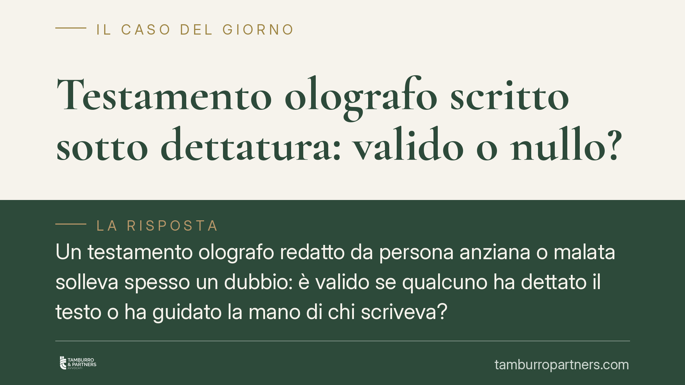

Testamento olografo scritto sotto dettatura: valido o nullo?
Un testamento olografo redatto da persona anziana o malata solleva spesso un dubbio: è valido se qualcuno ha dettato il testo o ha guidato la mano di chi scriveva? La risposta dipende dal requisito dell'autografia. Analizziamo la differenza tra dettatura, mano guidata e semplice sostegno, e le conseguenze sul piano della nullità e dell'annullabilità.

Il caso: quando la scrittura non è davvero del testatore
Capita di frequente. Un familiare rinviene un testamento olografo scritto di pugno da un parente anziano poco prima della morte. Altri eredi contestano: quelle disposizioni non riflettono la reale volontà del defunto, perché il testo sarebbe stato dettato da chi ne trae vantaggio, o addirittura scritto tenendo la mano del testatore.
La questione non è astratta. Tocca il cuore del testamento olografo, la cui validità poggia su un requisito preciso: l'autografia.
Inquadramento normativo
L'art. 602 del Codice civile stabilisce che il testamento olografo deve essere scritto per intero, datato e sottoscritto di mano del testatore. L'autografia non è un dettaglio: è l'elemento che garantisce la provenienza e la genuinità della volontà espressa.
Qui interviene l'art. 606 c.c., che distingue due regimi. Il comma 1 sanziona con la nullità il testamento privo di autografia o di sottoscrizione: è il vizio più grave, che il giudice può rilevare e che chiunque vi abbia interesse può far valere senza limiti di tempo. Il comma 2 prevede invece la semplice annullabilità per ogni altro difetto di forma: l'azione spetta a chi vi ha interesse e si prescrive in cinque anni dalla data in cui è stata data esecuzione alle disposizioni testamentarie.
Dettatura, mano guidata e semplice sostegno
La dettatura, di per sé, non compromette l'autografia. Se il testatore scrive interamente di propria mano un testo che gli è stato dettato o suggerito, il documento resta formalmente autografo. Il problema, semmai, si sposta sul piano della volontà: occorre verificare se quel contenuto sia davvero espressione libera del testatore.
Diverso è il caso della mano guidata. Quando una terza persona imprime il movimento sulla mano di chi scrive, l'autografia viene meno: il tratto non è del testatore, ma di chi lo dirige. Le disposizioni sono nulle ai sensi dell'art. 606, comma 1.
La giurisprudenza di legittimità distingue con nettezza la mano guidata dal semplice sostegno. Se un terzo si limita a reggere il polso o il braccio tremante, senza determinare il segno grafico, l'autografia si conserva: la scrittura resta riconducibile al testatore. Il confine tra le due situazioni è di fatto, e va accertato caso per caso (orientamento da verificare in relazione alla singola pronuncia).
Il piano della volontà: art. 624 c.c.
Accanto ai vizi di forma esiste il piano sostanziale. L'art. 624 c.c. consente l'annullamento delle disposizioni testamentarie viziate da errore, violenza o dolo. Anche qui l'azione si prescrive in cinque anni, ma il momento di decorrenza (dies a quo) cambia a seconda del vizio:
- per la violenza, il termine decorre dal giorno in cui essa è cessata;
- per il dolo, dal giorno in cui è stato scoperto;
- per l'errore, dal giorno del testamento.
È una distinzione da tenere presente: non basta parlare genericamente di "notizia del vizio". Nel caso della persona anziana o malata, quando emergono dubbi sulla capacità di intendere e di volere al momento della redazione, può rilevare anche l'art. 591 c.c., che disciplina l'incapacità di testare.
La prova: la perizia grafologica
Contestare un testamento richiede prove. La perizia grafologica è lo strumento centrale. Il consulente esamina indici tecnici che segnalano un tratto guidato: pressione anomala e uniforme, andamento troppo regolare rispetto alle condizioni fisiche del testatore, tremori assenti dove sarebbero attesi, esitazioni nei collegamenti tra le lettere, discontinuità del gesto grafico.
Sono elementi che il perito valuta nel loro insieme, confrontando la scrittura contestata con documenti sicuramente autografi del defunto.
Cosa fare in concreto
- Recuperate le scritture di comparazione: lettere, firme, documenti autografi del testatore, indispensabili per la perizia.
- Verificate le condizioni di salute al momento della redazione: cartelle cliniche, referti e testimonianze aiutano a valutare capacità e autonomia nella scrittura.
- Non attendete: l'annullabilità per vizi di forma si prescrive in cinque anni dall'esecuzione delle disposizioni; per i vizi della volontà, calcolate il termine secondo il tipo di vizio.
- Distinguete i piani: valutate se contestare l'autografia (nullità) o la genuinità della volontà (annullabilità), perché cambiano azione, termini e onere probatorio.
- Consultate un legale prima di agire: la scelta tra le due strade condiziona l'intera strategia successoria.
Conclusione
Un testamento dettato non è automaticamente nullo; lo diventa quando viene meno l'autografia, come nella mano guidata. Il semplice sostegno, invece, non lo invalida. La verifica è tecnica e va affidata a strumenti probatori solidi, nel rispetto dei termini di prescrizione.
Contributo informativo a cura di Tamburro & Partners Avvocati. Non costituisce parere legale.
Ogni famiglia ha il suo equilibrio.
Separazione, divorzio, affidamento, assegno: se vuoi un confronto riservato su una specifica situazione, scrivi allo studio. Ti rispondiamo entro un giorno lavorativo.